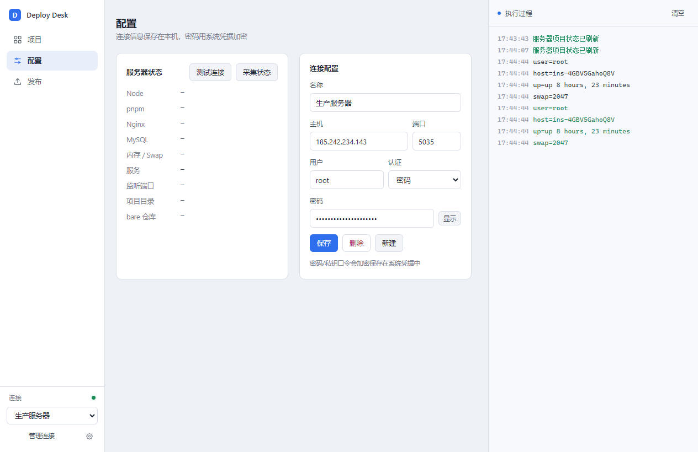
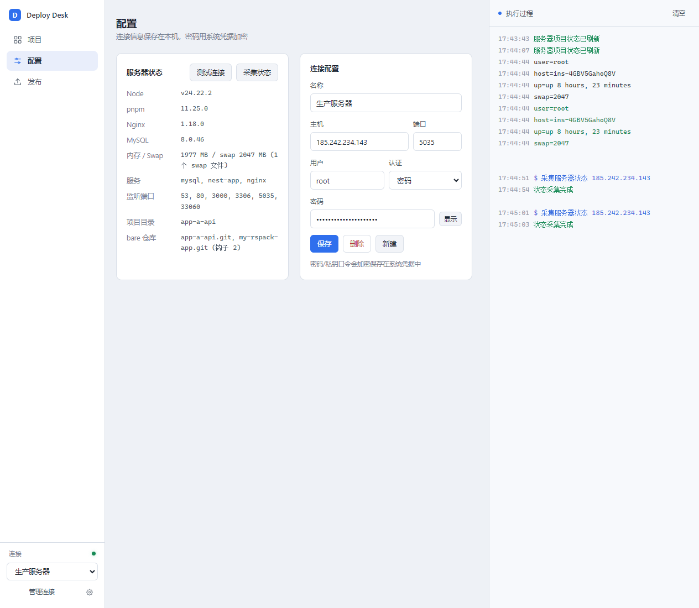
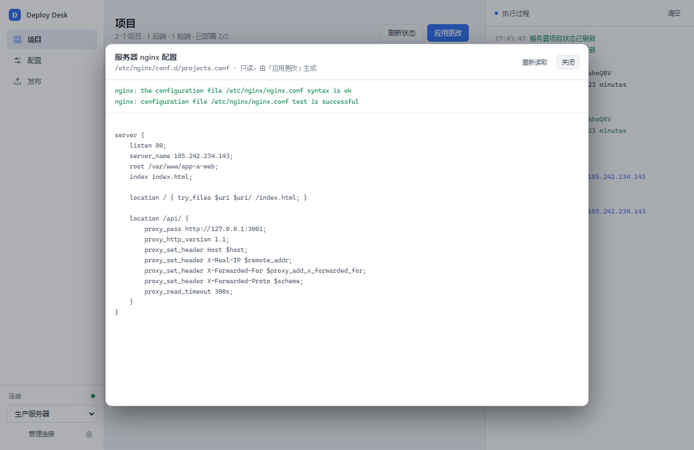
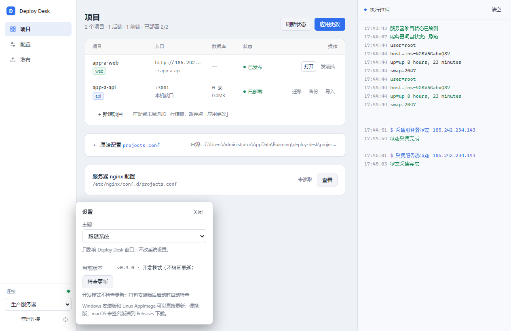

从一台新电脑连上服务器，到发布第一个项目。按顺序读完前两节，就能跑通整套流程。
Deploy Desk 是一个装在自己电脑上的"发布面板"，通过 SSH 连到你的 Linux 服务器。它不往服务器装任何常驻程序，也不会把管理页面暴露到公网。
| 你要做的事 | 在 Deploy Desk 里怎么做 |
|---|---|
| 发布后端 | 本地 git push，服务器钩子自动安装依赖、构建、迁移、重启，并做健康检查 |
| 发布前端 | 把本地 dist/ 用 SFTP 覆盖到 /var/www/<项目名> |
| 看服务器状态 | 一键采集 Node / Nginx / MySQL / 内存 / 端口 / 服务 / 项目目录 |
| 备份、迁移、导库 | 项目表里的后端行直接点「迁移 / 备份 / 导入」 |
密码存在哪？只存在这台电脑上，用系统凭据加密（Windows 用 DPAPI，macOS 用钥匙串）。服务器上的 projects.conf 里不会写密码。

第一次使用分两段：先把本机连上服务器（第 1–2 步），再让服务器认识你的项目（第 3–4 步），最后才是发布（第 5–6 步）。
打开 配置 页，在「连接配置」卡片里填：
| 字段 | 怎么填 |
|---|---|
| 名称 | 随便起，比如「生产服务器」 |
| 主机 | 服务器 IP 或域名，例如 185.242.234.143 |
| 端口 | SSH 端口，不是网站端口。这台服务器是 5035 |
| 用户 | 能执行 sudo / 本身就是 root 的账号，例如 root |
| 认证 | 「密码」或「私钥」。私钥方式填私钥路径，有口令再填口令 |
点 保存，再点「服务器状态」卡片右上角的 测试连接。左下角的小圆点变绿，说明连通了。

连不上？先确认端口是不是 SSH 端口（不是 80/3000），再确认密码或私钥没问题。服务器安全组/防火墙要放行这个端口。
点 采集状态，会显示 Node、pnpm、Nginx、MySQL 版本，内存与 swap，正在跑的服务、监听端口、/opt/apps 和 /opt/git 里已有的项目。这个操作只读。
如果 Node / pnpm / Nginx / MySQL 显示 missing，先把这些装好再继续。项目模板要求服务器已有 Node 20+、pnpm、Nginx、MySQL 8。
回到 项目 页，点「+ 新增项目」：表格末尾会插入一行，直接在单元格里填名称、选类型，域名和端口都可以留空。要改哪行就在哪行改，不要了点行尾的 ✕ 移除。
点右上角的 应用更改。它会：
projects.conf 上传到 /opt/deploy；apply.sh，按清单逐个项目初始化。每个后端项目会创建：系统用户、/opt/apps/<name>、/opt/git/<name>.git（带 push 钩子）、systemd 服务 nest-<name>、.env、MySQL 库和用户；前端项目会创建 /var/www/<name> 和 nginx 站点。整个过程幂等：已经存在的 .env、数据库不会被覆盖。
第一次执行完：点「刷新状态」，项目表的「状态」列就会从「待初始化」变成「已部署 / 已发布」。
服务器初始化后，本地仓库需要先加一次远程（在项目仓库目录执行，只做一次）：
git remote add deploy ssh://root@185.242.234.143:5035/opt/git/app-a-api.git然后在项目表点该后端行的「发布」，弹窗里选仓库目录：远端和分支是从这个仓库里真实读出来的下拉，不是手填。默认选中 URL 指向 /opt/git/<项目>.git 的那个远端，分支默认选服务器钩子会部署的那个；如果这个仓库还没有远端，弹窗下方会直接把上面那条 git remote add 命令写给你复制。确认后点 git push 发布。服务器收到推送后依次执行：安装依赖 → 构建 → 数据库迁移 → 重启服务 → 健康检查。
远端指向的不是这个项目的裸仓库、或者推的分支不是钩子监听的分支时，下方提示会标出来——这种推送会成功，但服务器什么都不做。
任何一步失败，服务会继续跑上一个版本。右侧日志会显示卡在哪一步。
先本地构建出 dist/，然后在项目表点该前端行的「发布」：弹窗会切到「前端 · dist 上传」并选中这个项目。选好 dist 目录、确认「发布到」（固定是 /var/www/<项目名>，和 nginx 的 root 一致），点「上传」，上传前会弹确认。
弹窗内容跟随行的类型：后端行出现 git push，前端行出现 dist 上传——想发布哪个项目，就点哪一行的「发布」。
一台只有 IP 的服务器放多个前端：域名列都填同一个 IP，但每个前端行写不同的显式端口（比如 8080、8081），nginx 按 listen 端口区分站点，「复制」按钮会自动带上端口（http://185.242.234.143:8081）。
「上传前清空目标目录」会先清掉远端目录再上传（先传暂存目录、再原子切换，切换前旧站点仍可访问）。确认 dist 目录选对了再勾选；不确定就先取消勾选。
一行就是一个项目，从左到右：
| 列 | 含义 |
|---|---|
| 项目 | 项目名 + 类型徽标：web 静态前端，api Node 后端 |
| 入口 | 域名或本机端口；前端行如果绑定了后端，会显示「→ 后端名」 |
| 数据库 | 表数量与大小；未启用 表示 db=none，缺失 表示库还没建 |
| 状态 | 后端：已部署 / 待初始化；前端：已发布 / 未发布 |
| 操作 | 「复制」复制站点地址（含端口）；每行都有「发布」（弹窗）；后端行另有「迁移 / 备份 / 导入」；行尾 ✕ 移除 |
状态是根据服务器上的实际目录判断的：后端看 /opt/apps/<name>，前端看 /var/www/<name>。所以刚发布完如果没变，点一下「刷新状态」。
如果某行配置写错了（项目名不合法、端口或域名重复、web 行指向了不存在的后端等），整行会标红，鼠标悬停能看到原因，「应用更改」也会被拦下。
配置页下方有「服务器 nginx 配置」卡片（服务器状态旁边），点「查看」会先跑 nginx -t，再只读展示 /etc/nginx/conf.d/deploy-<项目>.conf。这些文件由「应用更改」生成（每个项目一个），日常不要手改。

nginx -t 结果，下面是当前生成的站点配置改完代码、提交后，在后端行点「发布」→ 弹窗里点「git push 发布」。只需要选仓库目录，远端和分支是从仓库里读出来的，每个项目的仓库目录还会记住，切项目自动带出。发布成功后项目表的数据库列会更新。
本地 pnpm build 出新的 dist/，在前端行点「发布」，确认 dist 目录和目标目录，等日志显示「完成 N 个文件」。之后面板会在服务器本机请求一次该项目的端口（日志里的「站点自检」行），返回 200 才算真的在跑；没返回 200 会标红并提示去项目表核对端口列、点「应用更改」。
项目配了域名时，操作列会有「复制」，一键复制站点地址（含端口）。后端项目通常不配域名，只监听 127.0.0.1，由前端 nginx 把 /api/ 反代过去。
项目表那 6 列覆盖不到的东西（gzip、缓存头、额外的 location、再开一个端口、443 等），不要去改 deploy-<项目>.conf——它每次「应用更改」都会被整体重写。改成在服务器上放一个同名片段：
/opt/deploy/snippets/<项目名>.conf只要这个文件存在，apply.sh 就会把它 include 进该项目的 server { } 块末尾，并且永远不会覆盖它。写完后执行一次「应用更改」就会带上，日志里会多一行 + extras: ...。
# /opt/deploy/snippets/app-a-web.conf
gzip on;
gzip_types text/css application/javascript application/json;
location /assets/ {
expires 30d;
add_header Cache-Control "public";
}片段语法就是 nginx 指令，写错会让 nginx -t 失败。这时 apply 会自动回滚本次改动，站点保持原样，不会整站挂掉。
如果你要的是完全自己掌控（连生成的 server 块都不要），直接在 /etc/nginx/conf.d/ 下另写一个文件名不以 deploy- 开头的配置，apply 永远不会碰它。
只对后端行、且已经部署过的项目可用（按钮灰掉说明还没部署）。
| 按钮 | 实际执行的命令 | 说明 |
|---|---|---|
| 迁移 | pnpm exec prisma migrate deploy | 以项目用户身份在 /opt/apps/<name> 执行 |
| 备份 | mysqldump ... | gzip | 备份到服务器 /var/backups/<name>-时间.sql.gz |
| 导入 | mysql ... < 文件 | 选本地 .sql 或 .sql.gz，先传到 /tmp 再导入，导入前二次确认 |
数据库连接信息不是让面板填的，而是从每个项目的 /opt/apps/<name>/.env 里的 DATABASE_URL 读取。所以库换机器、换账号，改 .env 后这些按钮自动跟着走。
导入会覆盖同名表。拿不准时先点「备份」，备份文件在服务器的 /var/backups。

Windows 免安装版（portable）、macOS 未签名版不支持应用内更新，请到 GitHub Releases 手动下载。
先确认认证方式选的是「密码」还是「私钥」。密码方式要重新输入一次并点保存；私钥方式要确认本机存在该文件、私钥口令正确。端口要填 SSH 端口（这台是 5035）。
说明这个安装包不完整，resources/server 下应该有 apply.sh、add-project.sh、post-receive、db.sh 四个文件。重新下载安装包即可；自行打包时确认仓库里有 server/ 目录。
通常是域名列写成了 http://example.com。nginx 的 server_name 只认主机名。把域名改成 example.com 再点「应用更改」即可；现在的 apply.sh 会自动去掉 http(s):// 和结尾斜杠，并按 root 替换旧站点块，不会越积越多。
先看日志里那行「站点自检 http://127.0.0.1:<端口>/ → …」：文件传上去了，但 nginx 没返回 200，多半是这一行没在清单里、或端口列不对，改完点「应用更改」再发一次。再确认上传的是 dist 目录里的内容（里面应该有 index.html），而不是项目根目录。还不行就勾选「上传前清空目标目录」重传一次，再刷新浏览器缓存。
看右侧日志停在哪一步。常见原因：pnpm install 失败、Prisma 迁移失败、端口被占。也可以在服务器上执行 systemctl status nest-<项目名> 和 journalctl -u nest-<项目名> -n 50 查看。
这些按钮只对已部署的后端项目开放。先完成「应用更改」和一次后端发布，再点「刷新状态」。
服务器上还没有 /var/www/<项目名> 这个目录。发布一次前端后点「刷新状态」就会变。
密码是用当前系统账户加密的，换机器/换账户后无法解密，需要重新输入一次。这是有意的：密码不会以明文落盘。
小写字母开头，只能包含小写字母、数字和 -，长度 3–31。它会同时作为目录名、系统用户名、服务名和数据库名（- 会换成 _）。
projects.conf 里不存密码。.env 权限是 600，数据库只监听本机，应用用独立系统用户运行。MemoryMax=384M，运行态堆上限（NODE_OPTIONS）默认 256M，后端数量建议 2–3 个以内。